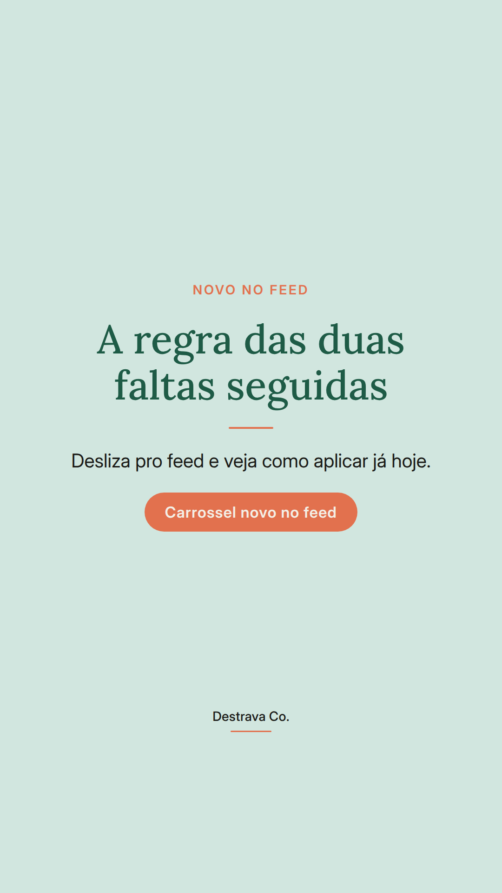
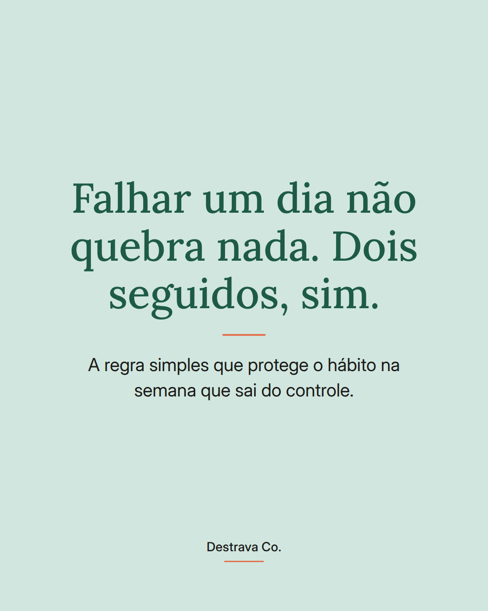
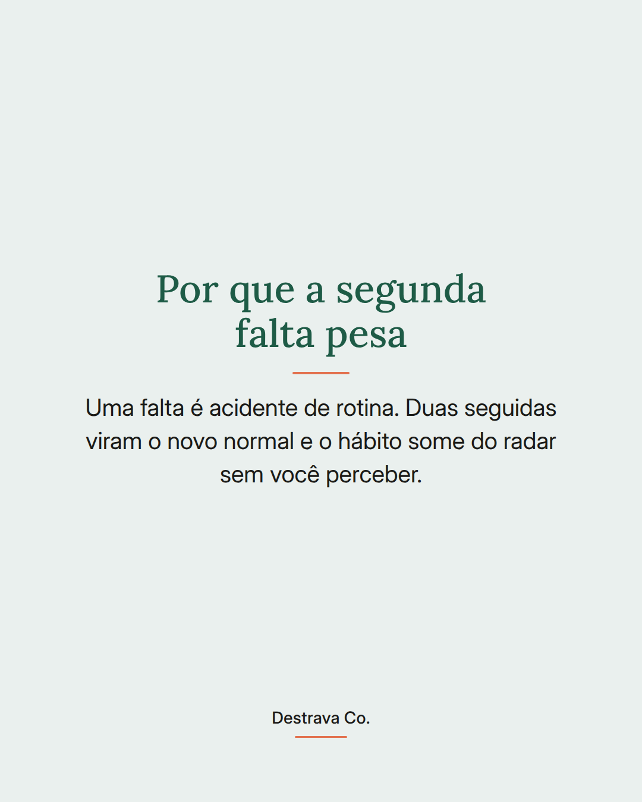
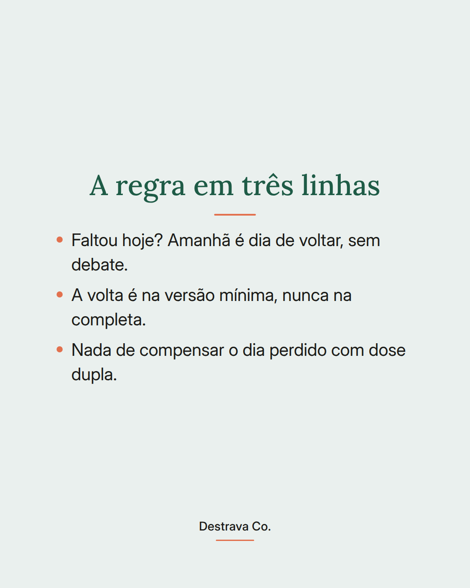
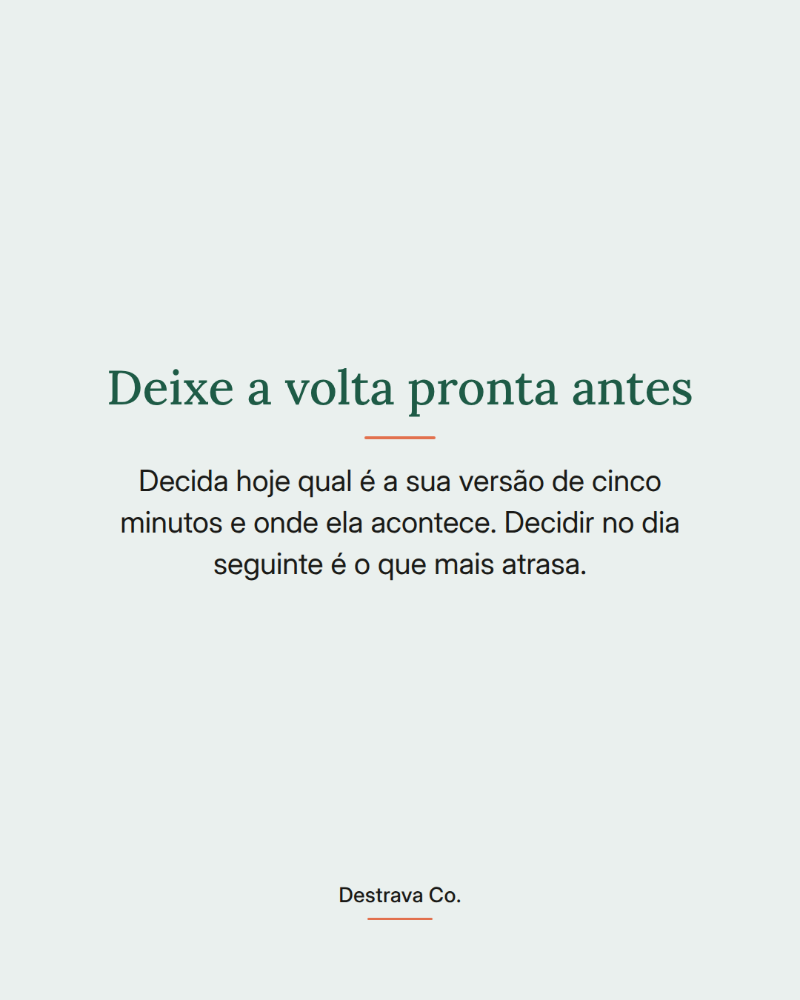

Falhar um dia não quebra o hábito. O que quebra é deixar virar dois.
Constância não é sequência perfeita, é tempo de retomada curto. Quem volta no dia seguinte segue na rotina. Quem espera a próxima segunda costuma recomeçar do zero.
Por isso a regra é simples: pode faltar, não pode faltar duas vezes seguidas. E a volta é sempre pela versão mínima, aquela de cinco minutos que cabe até no dia corrido.
Deixa combinado antes qual é essa versão e onde ela acontece. Assim o dia ruim não precisa de força de vontade, só de um passo já decidido.
Salva pra lembrar no próximo tropeço e manda pra uma amiga que anda se cobrando demais. Se quiser estruturar isso com calma, o Destrava 21 está esperando por você na bio.